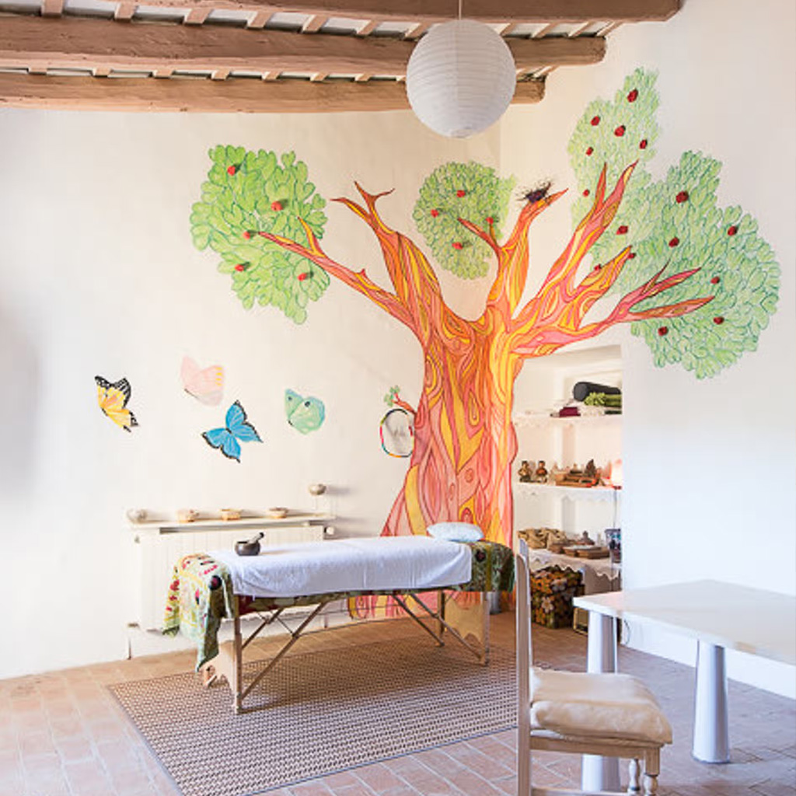

The Experience
During this intimate late-summer retreat in the peaceful Catalan countryside, we will create a space for presence, creativity, and authentic connection — with ourselves, with others, and with nature.
During the retreat you will experience:
- gentle morning yoga and meditation
- embodied movement and somatic exploration
- conscious dance journeys with live music
- cacao and sharing circles
- time to rest, swim, or explore nature
- nourishing vegetarian meals
- a supportive and intimate group atmosphere.

Cacao Circle

Live Ecstatic Dance

Massages availables

Nourishing Food

Yoga & Movement